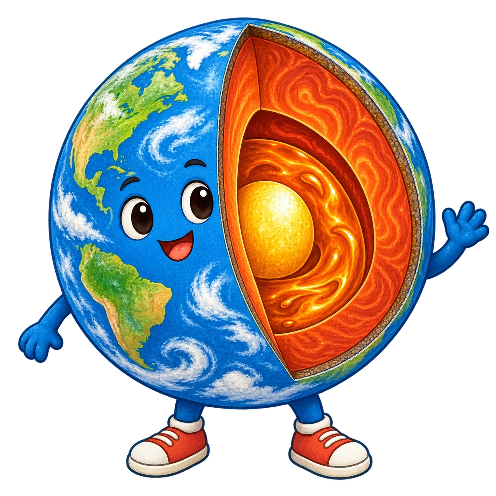

Question prompt appears here.
Your answer
Ink scratchpad
Use an electronic pen to sketch layers, faults or reasoning.
Planet Earth revision
100 four-option questions and 50 triple-blank challenges across Earth structure, volcanoes, earthquakes and alerts.

Choose a field station
Use an electronic pen to sketch layers, faults or reasoning.